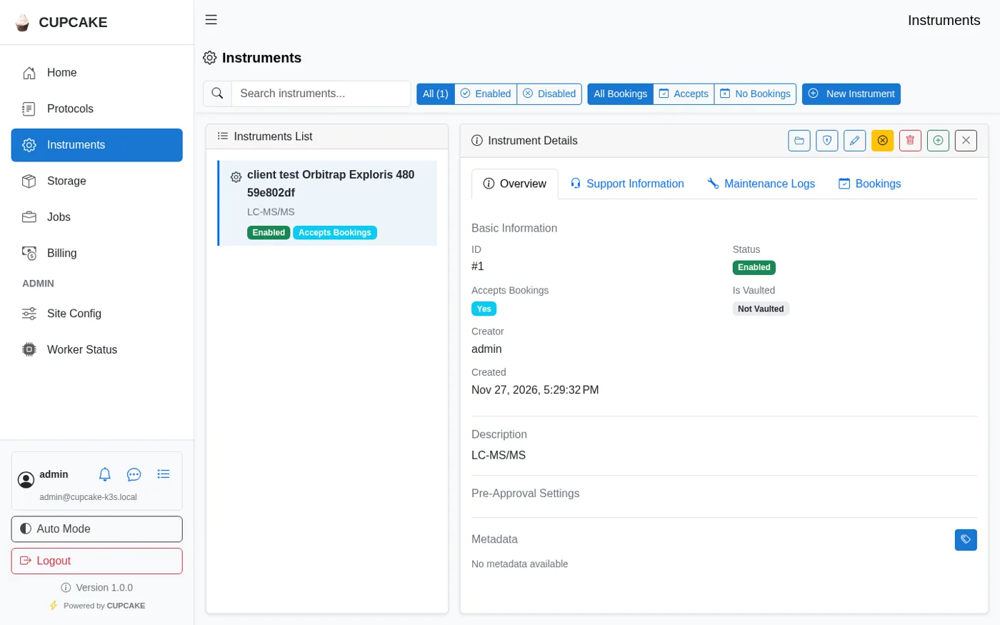

Instruments lists the instruments you can see; selecting one shows its details.

An instrument's details
- Overview: its description, whether it accepts bookings, and its pre-approval limits.
- Metadata: SDRF fields describing it, such as its model, used in the metadata of jobs run on it.
- Support Information: serial number, vendor, manufacturer, location, maintenance frequency and warranty, and how many days before maintenance or warranty end to notify.
- Maintenance Logs: routine, emergency and other maintenance, with its status and attached documents. A log can be saved as a template for the next one.
- Bookings: the instrument's bookings, approved or waiting for approval.
Documents such as safety data sheets, certificates and manuals are kept with the instrument, and Manage Contacts keeps the people to contact about it.
Bookings
New Booking books the instrument from a start to an end time; a booking can be marked as maintenance. A booking is approved straight away when it starts within the instrument's Max Days Ahead and lasts no longer than its Max Days Within Usage, and overlaps no other booking. Otherwise it waits for approval. An instrument that does not allow overlapping bookings refuses a booking that overlaps another.
Permissions
Manage Permissions gives users one of three levels:
- View: see the instrument and its information.
- Book: also book it.
- Manage: also change its settings and maintenance logs, and its permissions.
A disabled instrument is visible to staff only.